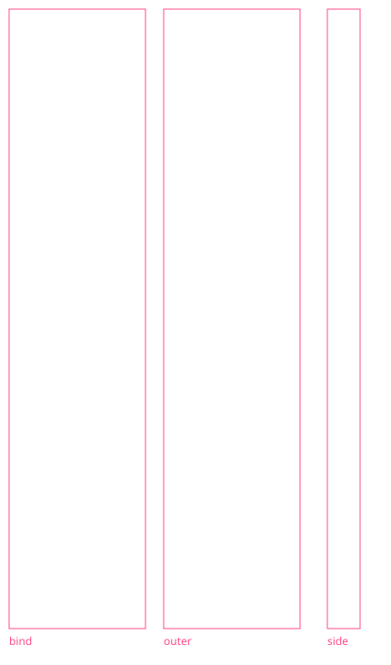

Dancer
Veil House, an invented canyon ad house. Broadway joi-bridge-dancer is a 15 × 68 m tower-band panel, pink, rank 0, spill 36 m, seed 0.37, hem planted 0.12 m above the street. Hollywood hollywood-dancer is the same figure letterboxed in a 24 × 68 m skyline panel, spill 48 m, seed 0.17. The footbridge deck stays empty.
Now
Nine SDF shapes and a glow ellipse. On the 15 m quad the thick middle chevron is about 7.8 m wide and the head is about 1.5 × 12 m. They read as one pink column. Two triangles, plus ghost slices 0.85 m back on the first five panels in the field's score order.
Target
Crown 59.5 m above the hem, raised hand at 64.4 m, middle skirt 13.2 m, shoulders 8.4 m, head 4.2 × 6.8 m, depth at most 1.8 m. Three skirt steps on one body, waist pinched to 4.2 m, a veil on one side. The arm stays up.

#bind is the close figure, #outer is the low and distant shell, #side is the 1.8 m blade. The pink frames are guides and are not part of the mask.Reads
| Distance | What you should see |
|---|---|
| 5 m | Hem point, the lowest skirt step, scan bars, pink spill on the wet street. A person at the feet is a small dark mark. |
| 30 m | Diamond head, arm up, pinched waist, three skirt steps, veil. Scanlines sit on the body. |
| 200 m | A pink vertical, wider in the middle, a nick where the hand is, the head as a cap. Hollywood also has to read as a flare and a cap from about a kilometre. |
Treatment she has to survive
| Piece | Value |
|---|---|
| Tint | Pink (1.00, 0.18, 0.55), core 62% toward white |
| Scan | 8 lines at low detail, 32 at full, scrolling |
| Tear | A rare band, at most 0.6 m on the Broadway quad |
| Ghost | High one slice, ultra two, 0.85 m back, only if she is among the first five panels in the field's score order |
| Idle | About 5.2 s. Head ±1.1 m. She does not walk. |
| Low | Thin glyph. Close up the radii stay near the thin column. She stays in the city. |
Full tables: look-target, scale, LOD.
Pedestrians
One mesh named crowd. Median 1.80 m, soles on the ground, shoulders 0.48 m, long hem 0.74 m, short hem 0.96 m, knee 0.45 m. Heights 1.55–1.91 m, scaled uniformly. The boxes today put the head at half the torso width, the soles at 2 cm, and the short hem 6 cm from the long one.

#stand, #short, #rain, #side. One centimetre is one unit. The canopy is a shallow dome, 1.05 m across, apex at 2.15 m.Coat mix, per thousand people
| Hash band | Share | Garments |
|---|---|---|
| 0–339 | 34% | Coat only |
| 340–559 | 22% | Hood |
| 560–699 | 14% | Hat |
| 700–819 | 12% | Bag |
| 820–919 | 10% | Hood and bag |
| 920–999 | 8% | Hat |
Short coats are about 19%, and only when there is no hood. Coat colours: 93% the nine darks, 4% off-white, 3% pale plastic. Eight canopy colours, even mix. Umbrella fraction by rain: 0, 0.28, 0.55, 0.74, 0.90. Cooks and awning clusters hold none. Shaft colour (1.00, 0.74, 0.38).
Reads
| Distance | What you should see |
|---|---|
| 5 m | Hem, planted foot, hand on the shaft, hood or hat. The head is a blank volume. |
| 30 m | Canopy as a roof, coat colours apart, long hem versus short hem. Medium has already frozen the walk (reach 28 m). High and ultra still swing. |
| 200 m | Nobody. Radius tops out at 88 m. The sheet still shows a tick and a canopy fleck, in case a shot cheats the radius. |
Walk cycle 1.42 m, speed 1.32–1.68 m/s, bob 2 cm. Full notes: look-target, scale, LOD.
LOD
Bands are what a review should report. Landing outside one is a note. Missing the silhouette is a fail.
| Tier | Dancer | Dancer tris | Crowd (market) | Crowd tris |
|---|---|---|---|---|
| Low | Outer shell, coarse scan, no spill | 180–400 | 56 people, 48 m, frozen pose, simple coat | 120–180 |
| Medium | Three skirt steps, veil sheet, waist pinched | 1,200–2,500 | 160 people, 64 m, swing inside 28 m | 280–450 |
| High | Facets, hems, veil ribbons, one ghost if she is near | 4,000–8,000 | 340 people, 78 m, swing inside 48 m | 700–1,100 |
| Ultra | The high mesh, a second ghost | same file | 680 people, 88 m, swing inside 72 m, the high mesh | same file |
The dancer's ceiling also fades to the shell between 24 m and 160 m, which is the curve the shader already uses. Past 160 m every tier is the glyph. Broadway culls with the tower band (1.2–3.2 km by tier). Hollywood culls with the skyline band (2.5–7.7 km).
Harness
The spinner loop: Blender, meshopt glTF, a contact sheet, a written score, then the next round. Scripts and public/models/ files are a later pass. Leave scripts/screenshots.mjs alone.
- Block the silhouette. Low, medium, and high are the same shell. Stop if the front overlap is under 0.82.
- Separate the parts the 30 m view has to name (skirts and waist, or short hem and dome).
- Facets, hems, ribs on the high file only. Low stays the shell.
Overlap is orthographic and unfogged. Street sheets are night rain at 5, 30, and 200 m. Front IoU ≥ 0.82 passes, 0.70–0.82 revises, below that fails the round. Side IoU ≥ 0.75.
Baseline scores, what ships today
| Dancer | Crowd | |
|---|---|---|
| Silhouette | 3 | 3 |
| Pose or gait | 2 | 5 |
| Costume or variety | 2 | 4 |
| Material | 4 | 3 |
| Hologram or umbrella | 6 | 4 |
| Distance | 3 | 4 |
| Film feel or crowd | 4 | 5 |
Reasons and the round tables: dancer plan, pedestrian plan.
References
Links only. Nothing in this list is stored in the repo. Stills are for rain, pink spill, scan, and the size of a person against a giant figure. Photos are for wet streets, canopy width, and night contrast. Do not model a face or copy a sign.
- vfxblog — the giant pink street hologram
- Animation World Network — DNEG on that shot
- vfxblog — contour lines and offset layers
- Art of VFX — Paul Lambert
- Art of VFX — Richard Hoover
- Sky News — pink spill on the person in front
- American Cinematographer — Cronenweth on the 1982 crowd and umbrella shafts
- NASA-STD-3000 §3.3 — stature and breadth
- Wikimedia — two people, rain, umbrellas (CC0)
- Wikimedia — Kagurazaka after night rain
- Wikimedia — neon street, people small (CC BY 4.0)
- Wikimedia — rainy night street, Helsinki (CC BY-SA 4.0)

.jpg){kind=link}


The annotated lists are dancer references and pedestrian references.